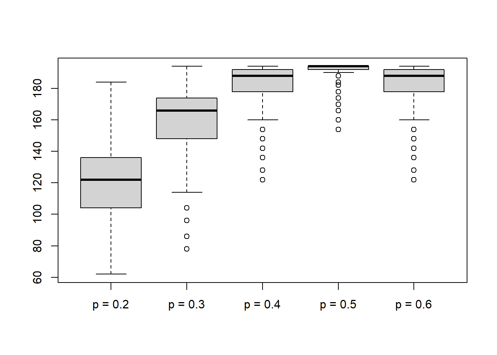
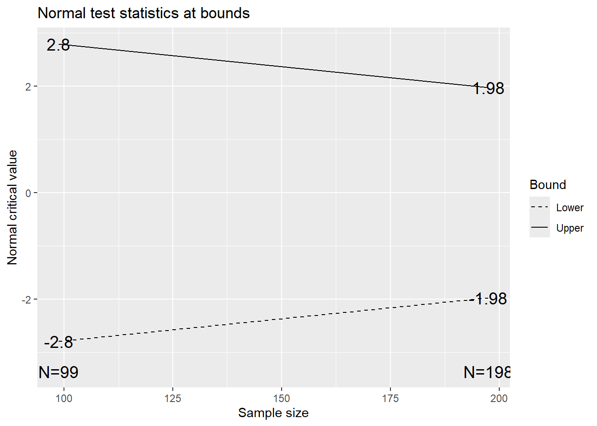

Oftentimes our power calculations represent our best guess at a realistic treatment effect, but even using previous studies or extensive clinical/scientific background can still result in uncertainty. In this module we discuss how we can incorporate re-estimation procedures during the trial to better ensure we enroll sufficient participants to detect the observed effect.
A selection of packages that may be helpful in implementing a re-estimation procedure include:
blindrecalc:
a package for blinded sample re-estimation based on estimating
nuisance parametersrpact: a package
for confirmatory adaptive clinical trial design, simulation, and
analysis; includes functions for combination testing for use in
unblinded designsgsDesign:
includes the ssrCP() function for unblinded re-estimation
based on conditional poweresDesign:
looks at adaptive enrichment designs with sample size re-estimationIn our first example we observe how the blindrecalc
package can be used for a study with a binary outcome. We will use a
chi-squared test as our motivating example, largely following the steps
from their helpful R
Journal paper.
First we set up our design as the chi-squared test using
setupChiSquare(). In this example we are testing a
one-sided hypothesis where \(H_1\colon p_1
> p_2\) with \(\alpha=0.025\), \(\beta=0.2\) (i.e., power of 80%), and we
are interested in detecting a difference between two groups of 20%
(i.e., \(\delta=0.2\)).
We can then estimate the number needed in a fixed sample design using
n_fix(). Here the nuisance parameter represents the average
of the two groups. We can then estimate the \(N\) needed overall with \(N/2\) in each randomized group to detect a
difference of 20%.
library(blindrecalc)
# Compare basic functions
design <- setupChiSquare(alpha = 0.025, beta = 0.2, delta = 0.2, alternative = "greater")
n_fix(design, nuisance = c(0.2, 0.3, 0.4, 0.5))## [1] 124 164 186 194We can verify these sample sizes are analogous to the
power.prop.test() function in base R:
### Check that power.prop.test matches n_fix (which it does)
## round up N for each group, multiple by 2 to match overall sample size from n_fix
# nuisance 0.2
a1 <- ceiling(power.prop.test(p1=0.1,p2=0.3,sig.level=0.025,power=0.8, alternative='o')$n)*2
# nuisance 0.3
a2 <- ceiling(power.prop.test(p1=0.2,p2=0.4,sig.level=0.025,power=0.8, alternative='o')$n)*2
# nuisance 0.4
a3 <- ceiling(power.prop.test(p1=0.3,p2=0.5,sig.level=0.025,power=0.8, alternative='o')$n)*2
# nuisance 0.5
a4 <- ceiling(power.prop.test(p1=0.4,p2=0.6,sig.level=0.025,power=0.8, alternative='o')$n)*2
# print sample sizes
c(a1,a2,a3,a4)## [1] 124 164 186 194Let’s focus on the nusiance=0.2 case. We can examine the
impact on our design if we observe other nuisance parameters even though
we anticipated 0.2. The toer() function allows us to
estimate the type I error rate we may encounter if we do or do not use
blinded re-estimation:
design <- setupChiSquare(alpha = 0.025, beta = 0.2, delta = 0.2, alternative = "greater")
n <- n_fix(design, nuisance = 0.2) # N = 124 total (62 per group)
p <- seq(0.2, 0.6, by = 0.1)
toer_fix <- toer(design, n1 = n, nuisance = p, recalculation = FALSE)
toer_ips <- toer(design, n1 = n/2, nuisance = p, recalculation = TRUE)
t1e_tab <- rbind( "No SSR" = toer_fix, "SSR at 1/2 Enrolled" = toer_ips)
colnames(t1e_tab) <- p
t1e_tab## 0.2 0.3 0.4 0.5 0.6
## No SSR 0.02366058 0.02484306 0.02701163 0.02943799 0.02701163
## SSR at 1/2 Enrolled 0.02544561 0.02536076 0.02484492 0.02565171 0.02484492By comparing these type I error rates, we see that there can be an inflation to our desired \(\alpha=0.025\) due to observing different averages between our two groups (i.e., the nuisance parameters reflected by the column headers). With blinded SSR, we see better control of the type I error rate.
We can use the similar pow() to estimate the power under
our design with varying nuisance parameters:
pow_fix <- pow(design, n1 = n, nuisance = p, recalculation = FALSE)
pow_ips <- pow(design, n1 = n/2, nuisance = p, recalculation = TRUE)
pow_tab <- rbind( "No SSR" = pow_fix, "SSR at 1/2 Enrolled" = pow_ips)
colnames(pow_tab) <- p
pow_tab## 0.2 0.3 0.4 0.5 0.6
## No SSR 0.8100375 0.6892655 0.641467 0.6381293 0.641467
## SSR at 1/2 Enrolled 0.7871930 0.7933507 0.794409 0.7994804 0.794409For power we see that SSR maintains approximately 80% power, but without SSR the power decreases as or nuisance parameter grows.
We can also plot the distribution of sample sizes that would occur at different nuisance parameters to evaluate our potential risk of having a much larger sample size:
n_dist(design, n1 = n/2, nuisance = p, plot = TRUE)
## p = 0.2 p = 0.3 p = 0.4 p = 0.5 p = 0.6
## Min. 62.0000 78.0000 122.0000 154.0000 122.0000
## 1st Qu. 104.0000 148.0000 178.0000 192.0000 178.0000
## Median 122.0000 166.0000 188.0000 194.0000 188.0000
## Mean 122.1816 160.6994 184.1047 191.8221 184.1047
## 3rd Qu. 136.0000 174.0000 192.0000 194.0000 192.0000
## Max. 184.0000 194.0000 194.0000 194.0000 194.0000In this figure above we see that if our nuisance parameter is actually 0.2 as assumed for the power calculation, or sample size re-estimation could range from 62 to 184 versus our planned \(N=124\). However, this does assume we allow for sample size reductions and have no limit on the maximum increase. If our guess of the nuisance parameter is 0.5, we see the largest increase in our expected sample size up to 191.8, with a range of 154 to 194.
The gsDesign package includes the ssrCP()
which allows us to implement an unblinded sample size
re-estimation procedure. Here we continue our previous example using a
binary outcome. In this case we will incorporate traditional group
sequential O’Brien-Fleming boundaries for interim monitoring for
efficacy. This means our sample size will also be adjusted relative to a
fixed design to account for the use of the traditional GSD (this is in
contrast to alpha-spending boundaries that are OBF-like, where the
sample size remains fixed).
First, we must establish the design type based on the
gsDesign() function before extending to a conditional power
design with ssrCP():
library(gsDesign) # load package
x <- gsDesign(
k = 2, # number of analyses planned, including interim and final
n.fix = 196, # sample size for a fixed design with no interim
timing = 0.5, # timing of interm analyses
test.type=2, # 6 options covering one- vs. two-sided and symmetric vs. asymmetric boundaries; 2 is a two-sided symmetric approach
alpha = 0.025, # one-sided type I error rate
beta = 0.2, # type II error rate (i.e., power=1-beta)
delta0 = 0, # null hypothesis parameter (i.e., no difference)
delta1 = 0.2, # alternative hypothesis parameter (i.e., difference we wish to detect)
sfu='OF' ) # alpha-spending for efficacy monitoring
# plot stopping boundaries
plot(x)
The plot shows our stopping boundaries for our two-sided test, with the final critical value being 1.98 (versus 1.96 in a fixed design without interim monitoring), as well as an increase from \(N=196\) to \(N=198\).
We can then extend this design to a conditional power design based on an observed test statistic at the end of our first stage. Here we assume we observed \(Z=1.6\):
# extend design to a conditional power design
xx <- ssrCP(x = x, # provide design used
z1 = 1.6, # enter observed test statistic
overrun = 0, # can note how many participants are enrolled but not included in the interim analysis
beta = 0.2, # targeted type II error for SSR (i.e., targeted power=1-beta)
cpadj = c(0.5,0.8), # range of conditional powers for which SSR is to be performed, otherwise N from original design used
maxinc = 2, # argument limiting maximum fold-increase from planned max N (e.g., 2 times)
z2 = z2NC) # combination function to combine stage 1 and stage 2 results; z2NC=inverse normal combination test, z2Z=sufficient stat for complete data, z2Fisher=Fisher's combination test
# show immediately relevant information
xx$dat## z1 z2 n2 CP theta delta
## 1 1.6 1.19651 259.0207 0.6567062 0.1609988 0.03219977From the ssrCP documentation, we see these values
represent:
The most important summary is the re-estimated sample size of \(N=259.0207\) which rounds up to \(N=260\), resulting in a need to enroll
\(N_2=260-99=161\) in stage 2 instead
of the original \(N_2 = 198-99=99\).
Overall, this results in a total sample size of \(N_1+N_2=99+161=260\), which is less than
the two times inflation allowed by maxinc=2 (i.e., up to
\(198\times2 = 396\) is allowed).
The other useful summary is the z2=1.19651, which
represents that we need to observe a test statistic at least this large
for our inverse normal combination test to be significant.
If we assume we enroll the 161 additional participants and observe \(Z_2=1.3\), we would have a normal combination test of
\[ \frac{Z_1 + Z_2}{\sqrt{2}} = \frac{1.6 +1.3}{\sqrt{2}} = 2.05 > 1.96 = Z_{0.975} = Z_{1-\alpha/2} \]
Therefore, we would reject the null hypothesis and conclude we found an effect.
For our simulation study, let’s assume we are interested in designing a study where we wish to reduce the rate of an adverse event by exploring a new approach to a procedure:
For a fixed sample design, using power.prop.test(), we
can identify our sample size to enroll:
power.prop.test(p1=0.1,p2=0.25,sig.level=0.025,power=0.8, alternative='o')##
## Two-sample comparison of proportions power calculation
##
## n = 99.54016
## p1 = 0.1
## p2 = 0.25
## sig.level = 0.025
## power = 0.8
## alternative = one.sided
##
## NOTE: n is number in *each* groupGiven \(n=100\) per arm, we would plan for a study enrolling a total of \(N_{total}=200\).
We will evaluate five scenarios to determine the effect of sample size re-estimation:
We first implement our blinded re-estimation procedure. We will compare three strategies:
The code is hidden, but can be shown if desired. We will summarize the rejection rate and average (SD) sample size across 1,000 simulation trials.
sim_list <- list( c(0.25, 0.25), c(0.175,0.175), c(0.1, 0.25), c(0.15, 0.25), c(0.15, 0.3))
# Create objects to store results in
blinded_res <- blinded_n2_res <- fixed_res <- matrix(nrow=5, ncol=3, dimnames = list(c('Null 25 v 25','Null 17.5 v 17.5','Alt 10 v 25','Alt 15 v 25','Alt 15 v 30'), c('Rej_Rate','ESS','ESS_SD')))
# Set simulation parameters
n <- 200 # total sample size based on fixed sample
n1 <- 100 # sample size to enroll for stage 1
delta <- 0.15 # expected effect size under H1 from power calculation
r <- 1 # randomization ratio (e.g., 1:1)
nsim <- 1000
###
# simulate method with SSR allowing for smaller than expected N
for( combo in 1:length(sim_list) ){
# initialize object to save results in
simres <- data.frame( p=rep(NA,nsim), n=rep(NA,nsim) )
pt <- sim_list[[combo]][1]
pc <- sim_list[[combo]][2]
# loop through nsim simulations
for( i in 1:nsim ){
set.seed(i) # set seed for reproducibility
# simulate stage 1
trt <- rbinom(n=n1/2, size=1, prob=pt)
con <- rbinom(n=n1/2, size=1, prob=pc)
# blinded re-estimation
p0 <- sum(trt,con) / n1
# assuming same delta, estimate new pt and pc
pt_n1 <- p0 - delta*(r/(1+r))
pc_n1 <- p0 + delta*(r/(1+r))
# use power.prop.test based on re-estimated pt (p1) and pc (p2)
n_rest <- 2*ceiling(power.prop.test(p1=pt_n1,p2=pc_n1,sig.level=0.025,power=0.8,alternative='o')$n)
n2 <- n_rest - n1 # estimate sample size needed for remainder
if( n2 < 0 ){ n2 <- 0 } # if sufficient sample size already, set to 0
# simulate stage 2 data
trt <- c(trt, rbinom(n=n2/2, size=1, prob=pt) )
con <- c(con, rbinom(n=n2/2, size=1, prob=pc) )
# final analysis, save results
res <- prop.test(x=c(sum(trt),sum(con)), n=c(length(trt),length(con)), alternative = 'less') # defined as less based on order of data entered for trt and con
simres[i,] <- c(round(res$p.value,4), n1+n2 )
}
blinded_res[combo,] <- c( mean(simres$p < 0.025), round(mean(simres$n),1), round(sd(simres$n),1))
}
###
# simulate method with SSR but enrolling at least (N-N1) in stage 2 (i.e., not allowing fewer participants)
for( combo in 1:length(sim_list) ){
# initialize object to save results in
simres <- data.frame( p=rep(NA,nsim), n=rep(NA,nsim) )
pt <- sim_list[[combo]][1]
pc <- sim_list[[combo]][2]
# loop through nsim simulations
for( i in 1:nsim ){
set.seed(i) # set seed for reproducibility
# simulate stage 1
trt <- rbinom(n=n1/2, size=1, prob=pt)
con <- rbinom(n=n1/2, size=1, prob=pc)
# blinded re-estimation
p0 <- sum(trt,con) / n1
# assuming same delta, estimate new pt and pc
pt_n1 <- p0 - delta*(r/(1+r))
pc_n1 <- p0 + delta*(r/(1+r))
# use power.prop.test based on re-estimated pt (p1) and pc (p2)
n_rest <- 2*ceiling(power.prop.test(p1=pt_n1,p2=pc_n1,sig.level=0.025,power=0.8,alternative='o')$n)
n2 <- n_rest - n1 # estimate sample size needed for remainder
if( n2 < (n-n1) ){ n2 <- (n-n1) } # enroll at least (n-n1)
# simulate stage 2 data
trt <- c(trt, rbinom(n=n2/2, size=1, prob=pt) )
con <- c(con, rbinom(n=n2/2, size=1, prob=pc) )
# final analysis, save results
res <- prop.test(x=c(sum(trt),sum(con)), n=c(length(trt),length(con)), alternative = 'less') # defined as less based on order of data entered for trt and con
simres[i,] <- c(round(res$p.value,4), n1+n2 )
}
blinded_n2_res[combo,] <- c( mean(simres$p < 0.025), round(mean(simres$n),1), round(sd(simres$n),1))
}
###
# simulate fixed sample design for comparison
for( combo in 1:length(sim_list) ){
# initialize object to save results in
simres <- data.frame( p=rep(NA,nsim), n=rep(NA,nsim) )
pt <- sim_list[[combo]][1]
pc <- sim_list[[combo]][2]
# loop through nsim simulations
for( i in 1:nsim ){
set.seed(i) # set seed for reproducibility
# simulate stage 1
trt <- rbinom(n=n1/2, size=1, prob=pt)
con <- rbinom(n=n1/2, size=1, prob=pc)
# simulate stage 2 after stage 1 to keep same random sequence
trt2 <- rbinom(n=(n-n1)/2, size=1, prob=pt)
con2 <- rbinom(n=(n-n1)/2, size=1, prob=pc)
# final analysis
res <- prop.test(x=c(sum(c(trt,trt2)),sum(c(con,con2))), n=c(n/2,n/2), alternative = 'less') # defined as less based on order of data entered for trt and con
simres[i,] <- c(round(res$p.value,4), n )
}
fixed_res[combo,] <- c( mean(simres$p < 0.025), round(mean(simres$n),1), round(sd(simres$n),1))
}
# Format results
library(kableExtra)
kbl_tab <- cbind(fixed_res,blinded_res,blinded_n2_res)
kbl_tab %>%
kbl(col.names=c('Scenario',rep(c('Rejection Rate','ESS','ESS SD'), 3)) ) %>%
kable_classic() %>%
add_header_above(c(" "=1, "Fixed Sample"=3, "SSR with Lower N2"=3, "SSR with At Least N2"=3))|
Fixed Sample
|
SSR with Lower N2
|
SSR with At Least N2
|
|||||||
|---|---|---|---|---|---|---|---|---|---|
| Scenario | Rejection Rate | ESS | ESS SD | Rejection Rate | ESS | ESS SD | Rejection Rate | ESS | ESS SD |
| Null 25 v 25 | 0.020 | 200 | 0 | 0.022 | 257.3 | 31.0 | 0.022 | 258.1 | 29.2 |
| Null 17.5 v 17.5 | 0.016 | 200 | 0 | 0.023 | 197.7 | 35.1 | 0.021 | 212.9 | 18.6 |
| Alt 10 v 25 | 0.754 | 200 | 0 | 0.734 | 198.3 | 33.9 | 0.784 | 212.7 | 18.5 |
| Alt 15 v 25 | 0.368 | 200 | 0 | 0.384 | 218.7 | 34.2 | 0.394 | 225.3 | 24.8 |
| Alt 15 v 30 | 0.689 | 200 | 0 | 0.748 | 239.8 | 33.0 | 0.762 | 242.0 | 28.9 |
From these simulation results we can see that:
We can compare the results from our blinded SSR approach with an approach using unblinded SSR approaches. In this simulation we compare:
gsDesign::ssrCP(), where we assume that the second stage
must have at least 100 participants but could increase to 200
participants (i.e., we don’t allow fewer than expected participants in
stage 2). This approach uses the inverse normal combination test based
on the p-values from the two-sample test of proportions.power.prop.test() calculation for a decrease of 15% in
the treatment arm. If the control arm has a response rate less than 15%,
we stop for futility and calculate the one-sided p-value to record for
futility. Otherwise, we allow the re-estimation to increase the sample
size from 100 up to 200. Since we do not unblind the treatment arm, in
this approach we evaluate the performance if we use the overall data for
our final test p-value.The simulation code block is hidden, but can be shown for review.
library(gsDesign) # load library
# list of 5 simulation scenarios to mimic our blinded SSR
sim_list <- list( c(0.25, 0.25), c(0.175,0.175), c(0.1, 0.25), c(0.15, 0.25), c(0.15, 0.3))
# Create objects to store results in
unblinded_res <- unblinded_adhoc_res <- fixed_res <- matrix(nrow=5, ncol=3, dimnames = list(c('Null 25 v 25','Null 17.5 v 17.5','Alt 10 v 25','Alt 15 v 25','Alt 15 v 30'), c('Rej_Rate','ESS','ESS_SD')))
# Set simulation parameters
delta <- 0.15 # expected effect size under H1 from power calculation
r <- 1 # randomization ratio (e.g., 1:1)
nsim <- 1000
x <- gsDesign(
k = 2,
n.fix = 200, timing = 0.5, test.type=2,
alpha = 0.025, beta = 0.2, delta0 = 0, delta1 = 0.15, sfu='OF' )
n_fix <- 200 # total sample size based on fixed sample
n1 <- ceiling(x$n.I[1])
n <- ceiling(x$n.I[2])
###
# simulate method with SSR using conditional power
for( combo in 1:length(sim_list) ){
# initialize object to save results in
simres_gs <- data.frame( zcombined=rep(NA,nsim), n=rep(NA,nsim) )
pt <- sim_list[[combo]][1]
pc <- sim_list[[combo]][2]
for( i in 1:nsim ){
set.seed(i) # set seed for reproducibility
# simulate stage 1
trt <- rbinom(n=n1/2, size=1, prob=pt)
con <- rbinom(n=n1/2, size=1, prob=pc)
res_int <- prop.test(x=c(sum(trt),sum(con)), n=c(length(trt),length(con)), alternative = 'less')$p.value
# UNblinded re-estimation
xx <- ssrCP(x = x, z1 = qnorm(1-res_int), overrun = 0, beta = 0.2, cpadj = c(0.5,0.8), maxinc = 1.5, z2 = z2NC)
n_rest <- ceiling(xx$dat$n2) - n1
n2 <- n_rest
n2 <- if(n2 <= 100){ 100 }else{n2}
if( res_int < x$upper$prob[1,1] ){
# final analysis, save results
zcombined <- qnorm(1-res_int) / sqrt(1)
simres_gs[i,] <- c(zcombined, n1+0)
}else{
# simulate stage 2 data
trt2 <- rbinom(n=n2/2, size=1, prob=pt)
con2 <- rbinom(n=n2/2, size=1, prob=pc)
# final analysis, save results
res <- prop.test(x=c(sum(trt2),sum(con2)), n=c(length(trt2),length(con2)), alternative = 'less')$p.value
zcombined <- ( qnorm(1-res_int) + qnorm(1-res) ) / sqrt(2)
simres_gs[i,] <- c(zcombined, n1+n2)
}
}
unblinded_res[combo,] <- c( mean(simres_gs$zcombined >= qnorm(1-(0.025))), round(mean(simres_gs$n),1), round(sd(simres_gs$n),1))
}
###
# somewhat ad hoc approach to unblinded SSR
# first stage is used to implement re-estimation; no decreases in stage 2; up to 200 (versus 100) otherwise stop for futility
for( combo in 1:length(sim_list) ){
# set sample sizes based on fixed sample to initialize
n <- 200
n1 <- 100
# initialize object to save results in
simres_gs <- data.frame( p=rep(NA,nsim), n=rep(NA,nsim) )
pt <- sim_list[[combo]][1]
pc <- sim_list[[combo]][2]
for( i in 1:nsim ){
set.seed(i) # set seed for reproducibility
# simulate stage 1
trt <- rbinom(n=n1/2, size=1, prob=pt)
con <- rbinom(n=n1/2, size=1, prob=pc)
res_int <- prop.test(x=c(sum(trt),sum(con)), n=c(length(trt),length(con)), alternative = 'less')
# UNblinded re-estimation, where we use the estimate of the control group and still power for a 0.15 decrease in treatment
n_reest <- if( mean(con) <= 0.15 ){ 10000 }else{ ceiling(power.prop.test(p1=mean(con)-0.15,p2=mean(con),sig.level=0.025,power=0.8, alternative='o')$n)*2 }
n2 <- if( (n_reest - n1) < 100 ){100}else{n_reest - n1}
if( n2 > 200 ){
# ad hoc futility rule, save first stage result
p <- res_int$p.value
simres_gs[i,] <- c(p, n1+0)
}else{
# simulate stage 2 data
trt2 <- rbinom(n=n2/2, size=1, prob=pt)
con2 <- rbinom(n=n2/2, size=1, prob=pc)
# final analysis, save results
res <- prop.test(x=c(sum(c(trt,trt2)),sum(c(con,con2))), n=c(length(c(trt,trt2)),length(c(con,con2))), alternative = 'less')
p <- res$p.value
simres_gs[i,] <- c(p, n1+n2)
}
}
unblinded_adhoc_res[combo,] <- c( mean(simres_gs$p < 0.025), round(mean(simres_gs$n),1), round(sd(simres_gs$n),1))
}
###
# simulate fixed sample design for comparison
for( combo in 1:length(sim_list) ){
# set sample sizes for fixed sample
n <- 200
n1 <- 100
# initialize object to save results in
simres <- data.frame( p=rep(NA,nsim), n=rep(NA,nsim) )
pt <- sim_list[[combo]][1]
pc <- sim_list[[combo]][2]
# loop through nsim simulations
for( i in 1:nsim ){
set.seed(i) # set seed for reproducibility
# simulate stage 1
trt <- rbinom(n=n1/2, size=1, prob=pt)
con <- rbinom(n=n1/2, size=1, prob=pc)
# simulate stage 2 after stage 1 to keep same random sequence
trt2 <- rbinom(n=(n-n1)/2, size=1, prob=pt)
con2 <- rbinom(n=(n-n1)/2, size=1, prob=pc)
# final analysis
res <- prop.test(x=c(sum(c(trt,trt2)),sum(c(con,con2))), n=c(n/2,n/2), alternative = 'less') # defined as less based on order of data entered for trt and con
simres[i,] <- c(round(res$p.value,4), n )
}
fixed_res[combo,] <- c( mean(simres$p < 0.025), round(mean(simres$n),1), round(sd(simres$n),1))
}
# Format results
library(kableExtra)
kbl_tab <- cbind(fixed_res,unblinded_res,unblinded_adhoc_res)
kbl_tab %>%
kbl(col.names=c('Scenario',rep(c('Rejection Rate','ESS','ESS SD'), 3)) ) %>%
kable_classic() %>%
add_header_above(c(" "=1, "Fixed Sample"=3, "SSR with CP"=3, "SSR Unblind Control"=3))|
Fixed Sample
|
SSR with CP
|
SSR Unblind Control
|
|||||||
|---|---|---|---|---|---|---|---|---|---|
| Scenario | Rejection Rate | ESS | ESS SD | Rejection Rate | ESS | ESS SD | Rejection Rate | ESS | ESS SD |
| Null 25 v 25 | 0.020 | 200 | 0 | 0.010 | 203.9 | 11.7 | 0.022 | 212.6 | 39.0 |
| Null 17.5 v 17.5 | 0.016 | 200 | 0 | 0.015 | 203.7 | 13.4 | 0.022 | 170.3 | 49.1 |
| Alt 10 v 25 | 0.754 | 200 | 0 | 0.716 | 198.7 | 46.0 | 0.740 | 212.6 | 39.0 |
| Alt 15 v 25 | 0.368 | 200 | 0 | 0.335 | 206.4 | 30.9 | 0.378 | 212.6 | 39.0 |
| Alt 15 v 30 | 0.689 | 200 | 0 | 0.656 | 202.0 | 44.9 | 0.727 | 224.6 | 51.8 |
The simulation results indicate:
While only a limited set of methods and scenarios with a binary outcome, these results suggest the caution should be taken in implementing sample size re-estimation since it can introduce variability in our needed sample size while also potentially resulting in limited gains in power or type I error performance relative to a fixed sample design.
Below are some references to highlight based on the slides and code:
FDA Adaptive Design Clinical Trials for Drugs and Biologics Guidance for Industry Guidance Document: FDA guidance document on adaptive trial elements
Recent innovations in adaptive trial designs: A review of design opportunities in translational research: 2023 review paper examining adaptive and novel trial elements with included case studies
Guidance on interim analysis methods in clinical trials: 2023 review paper focusing on interim analyses in clinical trials with included case studies
Kieser, Meinhard. Methods and applications of sample size calculation and Recalculation in clinical trials. Springer, 2020.: textbook covering SSR methods and approaches